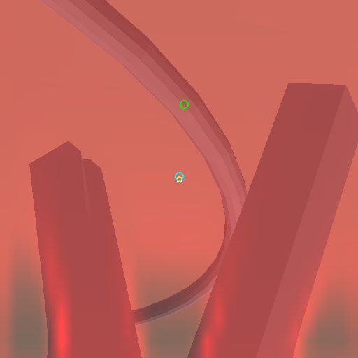
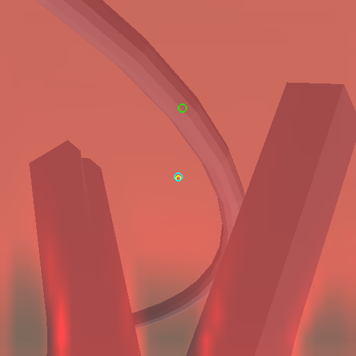
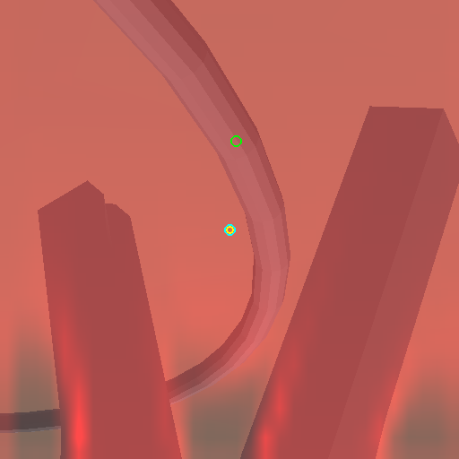

概览 / 研究诊断
从错误收敛，走到可用的局部闭环
Hold-open 实验不是项目的终点。它把问题从“为什么抓不住”缩小到“视觉零点为什么落在错误位置”，并直接推动了新的定位与深度组合。
01 The turning point
模型认为自己已经对准，真实位置却仍在偏离
为了排除闭夹动作的干扰，实验保持夹爪张开，只观察视觉伺服如何移动。



crop 中心模型预测点真实抓取点投影
02 Evidence chain
一次失败，怎样变成下一步实验
热图接近均匀，模型更像在使用相机先验，而不是稳定定位针上的抓取点。
特权几何伺服能够稳定抓取；真正缺少的是可部署视觉对抓取点的校准。
训练局部残差定位分支，并先在离线三维误差上筛选候选。
在配对开发条件中达到 83/84，姿态偏移由 18/48 提升至 47/48。
03 What was ruled out
不是靠猜测选择下一条路线
项目用针对性实验逐步排除或降低了多种可能解释。
固定 flow noise 派生与运行顺序，恢复 checkpoint 间可复现比较。
使用 FP32 trainables 与 optimizer state，并核对真实参数更新。
动作与夹爪因子实验没有建立它是主要瓶颈。
物理盆地扫描 8232/8240 成功，特权伺服 2640/2640 成功。
模型能看到针，但仍需稳定区分针弧上的正确位置。
04 Remaining edge case
83/84 之后，剩下的一次失败更值得研究
唯一失败发生在姿态偏移条件：控制器估计剩余误差约 0.06 mm，却在真实横向偏差约 12.7 mm 时闭夹。这说明传感深度有效，并不自动保证读取的是正确语义点。
下一轮会保存这一尾部案例的 RGB-D、热图、预测点与真实投影，比较三个训练种子从哪一步开始分叉。目标不是通过放宽门槛消除失败，而是让模型知道自己什么时候并不确定。